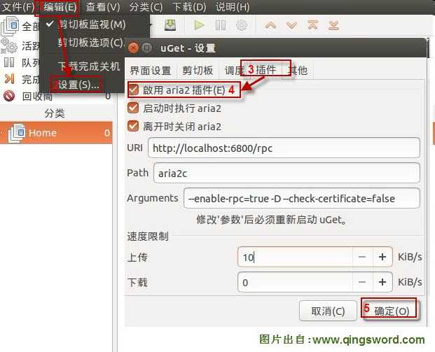
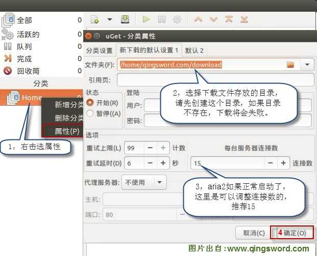
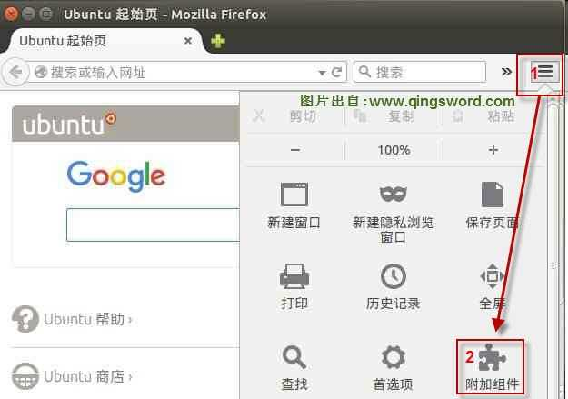
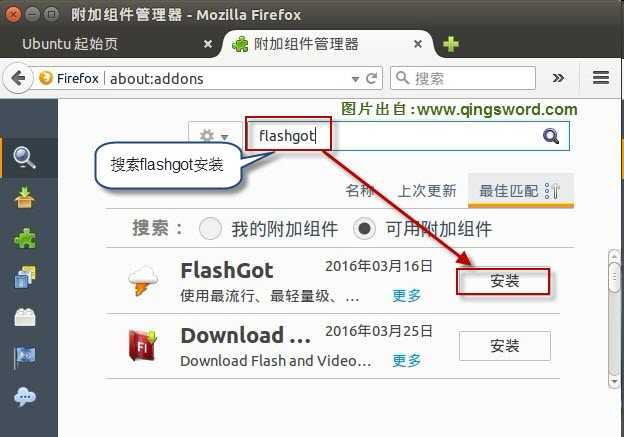
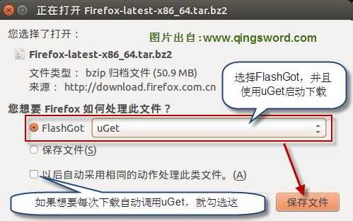

[ubuntu入门手册]-9-使用断点续传下载器uGet
引言
这篇文章给大家提供Ubuntu中两种断点续传下载方案，一种是纯UI界面的uGet(前端)+aria2(后端)，配合Firefox浏览器的FlashGot插件实现浏览器关联；另一种是纯终端下十分强大的aria2。
文章目录
0×1.安装uGet和aria2
打开终端安装uGet和aria2：
#1.更新软件源列表 qing@qingsword.com:~$ sudo apt-get update #2.安装uGet和aria2 qing@qingsword.com:~$ sudo apt-get install uget aria2 #3.点击启动栏"ubuntu按钮"搜索uget，或者在终端中直接输入uget-gtk，启动uGet qing@qingsword.com:~$ uget-gtk
启动后打开软件设置界面，开启aria2插件支持；
开启aria2插件后，关闭uGet并重新打开，配置下载目录和服务器连接数，如果aria2插件没有开启成功，服务器连接数是不能配置的；
0×2.在火狐浏览器中安装FlashGot组件
启动火狐浏览器,在菜单栏中点击”工具”>“附加组件”,然后搜索FlashGot，安装它；
 安装完成后重启Firefox，尝试着去下载一个文件，在弹出的FlashGot下载选择器中，选择uGet作为下载器；
uGet作为UI配合aria2下载各种站点HTTP，FTP资源还是非常快的，基本上能达到宽带的最大下载速度。
Ps：如果火狐的FlashGot提示下载失败，有可能是当地的网络接入商屏蔽了火狐服务器，请将下面的这段#mozilla写入系统/etc/hosts文件中,打开终端用gedit编辑hosts文件
qing@qingsword.com:~$ sudo gedit /etc/hosts
#mozilla
117.18.232.191 addons.cdn.mozilla.net
117.18.232.191 mozorg.cdn.mozilla.net
117.18.232.191 developer.cdn.mozilla.net
117.18.232.191 fhr.cdn.mozilla.net
117.18.232.191 support.cdn.mozilla.net
117.18.232.191 marketplace.cdn.mozilla.net
117.18.232.191 air.cdn.mozilla.net
117.18.232.191 activations.cdn.mozilla.net
117.18.232.191 cdn.mozilla.net
117.18.232.191 download-installer.cdn.mozilla.net
117.18.237.191 getpersonas-cdn.mozilla.net
117.18.232.191 snippets.cdn.mozilla.net
117.18.232.191 telemetry-experiment.cdn.mozilla.net
117.18.232.191 code.cdn.mozilla.net
117.18.232.191 videos.cdn.mozilla.net
117.18.232.191 glow.cdn.mozilla.net
68.232.45.109 df6a.https.cdn.softlayer.net
117.18.237.29 ocsp.digicert.com
0×3.使用纯终端aria2下载
Aria2 是一个轻量级多协议多源命令行下载工具；支持 HTTP, HTTPS, FTP, SFTP, BT, Metalink等协议；下面是Aria2的常用实例：
1）下载单个文件
#a.下载单个文件,将要下载的文件地址包含在一对英文双引号中，aria会将文件下载到当前目录中，可以使用ctrl+c来中断下载，如果需要断点续传，只需要在相同的目录下执行相同的命令，只要http源地址文件不变，就能直接断点续传，没有下载完的任务会同时存在两个文件，其中以.aria2结尾的文件保存着当前的下载进度和信息 qing@qingsword.com:~$ aria2c "http：//URL/file.zip" #b.使用多连接，多线程下载单个文件，-x15同一服务器连接数15，-s15单个任务最大线程数15（比起单线程会明显快很多，一般会达到当前网络最大下载速度） qing@qingsword.com:~$ aria2c -x15 -s15 "http：//URL/file.zip"
2）并行下载多个文件
#c.使用参数-Z（大写）并行下载任意数目的URL，每个URL用空格分隔 qing@qingsword.com:~$ aria2c -Z "http：//URL/file1.zip" "http：//URL/fileN.zip" #d.将URL放在文本文件中，让aria2下载文本文件中所有的URL qing@qingsword.com:~$ gedit TextFile #每行一个URL，保存在TextFile文件中 http：//URL/file1.zip http：//URL/file2.zip ...... http：//URL/fileN.zip #-i后面是文件名，-j3表示，一次并行下载这个文件中的3条URL文件 qing@qingsword.com:~$ aria2c -i TextFile -j3
3）下载BT和磁力链接
#e.显示一个.torrent文件中的内容 qing@qingsword.com:~$ aria2c -S "file.torrent" #f.直接解析URL中的种子文件内容下载 qing@qingsword.com:~$ aria2c "http：//URL/file.torrent" #g.解析本地种子文件内容下载 qing@qingsword.com:~$ aria2c "file.torrent" #h.限制上传速度为20K，当下载速度低于100K时，尝试增加连接数来提高下载速度 qing@qingsword.com:~$ aria2c -u20K --bt-request-peer-speed-limit=200K "file.torrent" #i.下载磁力连接 qing@qingsword.com:~$ aria2c "magnet:?xxx" #j.选择下载种子中的哪些文件，配合-S参数使用，先列出种子文件内容，再根据内容选择下载哪几个文件,本例选择下载种子文件中第1~3以及第6个文件 qing@qingsword.com:~$ aria2c --select-file=1-3,6 -T "file.torrent"
4）使用本地配置文件中的属性
上面的例子中的所有属性都可以直接写在aria2的本地配置文件aria2.conf中，在使用aria2下载的时候，只需要在aria2c后面写上文件或者bt连接地址就可以了，aria2会自动调用本地配置文件中的参数下载；
#k.创建本地配置文件 qing@qingsword.com:~$ gedit ~/.aria2/aria2.conf #在文件中输入下面的内容，请根据自己的环境修改部分参数（比如下载文件夹，监听端口等） # '#'开头为注释内容, 选项都有相应的注释说明, 根据需要修改 #被注释的选项填写的是默认值, 建议在需要修改时再取消注释 ## 基本选项 ## # 文件的保存路径(可使用绝对路径或相对路径，推荐使用绝对路径), 默认: 当前启动位置 dir=/home/qing/download # 文件预分配方式, 能有效降低磁盘碎片, 默认:prealloc # 预分配所需时间: none < falloc < trunc < prealloc # falloc和trunc则需要文件系统和内核支持 # NTFS建议使用falloc, EXT3/4建议trunc, MAC 下需要注释此项 file-allocation=trunc # 断点续传，目前只支持 HTTP/HTTPS/FTP 协议 continue=true ## 下载连接相关 ## # 最大同时下载任务数, 运行时可修改, 默认:5 max-concurrent-downloads=20 # 同一服务器连接数, 添加时可指定, 默认:1 max-connection-per-server=15 # 单个任务最大线程数, 添加时可指定, 默认:5 split=5 # 整体下载速度限制,单位K或M, 运行时可修改, 默认:0 #max-overall-download-limit=0 # 单个任务下载速度限制, 默认:0 #max-download-limit=0 # 整体上传速度限制, 运行时可修改, 默认:0 #max-overall-upload-limit=10K # 单个任务上传速度限制, 默认:0 #max-upload-limit=0 ## RPC相关设置 ## # 启用RPC, 默认:false enable-rpc=true # 允许所有来源, 默认:false rpc-allow-origin-all=true # 允许非外部访问, 默认:false rpc-listen-all=true # RPC监听端口, 端口被占用时可以修改, 默认:6800 rpc-listen-port=51112 # 设置的RPC授权令牌, v1.18.4新增功能, 取代 --rpc-user 和 --rpc-passwd 选项 #rpc-secret=TOKEN # 设置的RPC访问用户名, 此选项新版已废弃, 建议改用 --rpc-secret 选项 #rpc-user=USER # 设置的RPC访问密码, 此选项新版已废弃, 建议改用 --rpc-secret 选项 #rpc-passwd=PASSWD ## BT/PT下载相关 ## # 当下载的是一个种子(以.torrent结尾)时, 自动开始BT任务, 默认:true #follow-torrent=true # BT监听端口, 当端口被屏蔽时使用, 默认:6881-6999 listen-port=51111 # 单个种子最大连接数, 默认:55 bt-max-peers=500 # 打开DHT功能, PT需要禁用, 默认:true enable-dht=true # 打开IPv6 DHT功能, PT需要禁用 #enable-dht6=true # DHT网络监听端口, 默认:6881-6999 dht-listen-port=16881-16999 # 客户端伪装, PT需要 peer-id-prefix=-TR2770- user-agent=Transmission/2.77 # 继续之前的BT任务时, 无需再次校验, 默认:false bt-seed-unverified=true # 保存磁力链接元数据为种子文件(.torrent文件), 默认:false bt-save-metadata=true # 当速度总是低于200K/s，aria2将临时增加连接数来试着提高下载速度 bt-request-peer-speed-limit=100K # 下载完成多少分钟后停止做种，本例设置为1分钟 seed-time=1
Ps：经过测试，aria2对热门的bt资源下载速度可以达到带宽上限，对于一些冷门的资源，建议大家用迅雷离线下好后再以上方法下载到本地。另外，aria2的本地配置文件与uGet并不兼容，创建了本地aria2.conf后会导致uGet启动后不能启动aria2，所以，建议大家选择一种自己喜欢的下载方式，或者不创建本地配置文件，在使用aria2终端下载的时候手动添加一些常用参数。